Proximity ligation, chimeric reads, pairs, binning, balancing and distance decay
3D genome organisation showed what a Hi-C map contains. This lecture shows how a map is made from sequencing reads, and what can go wrong on the way.
.pairs, .cool, .mcool and .hic formats.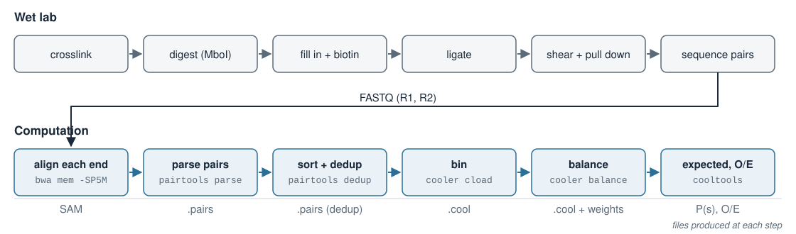
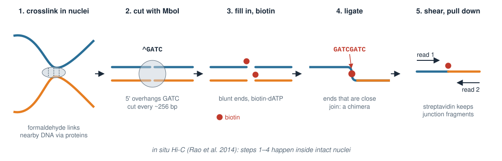
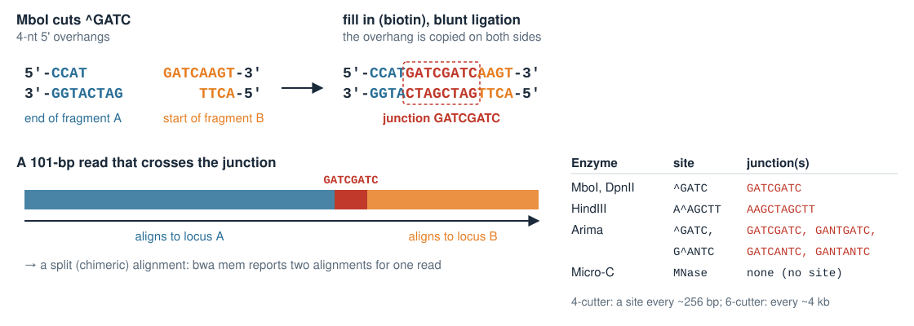
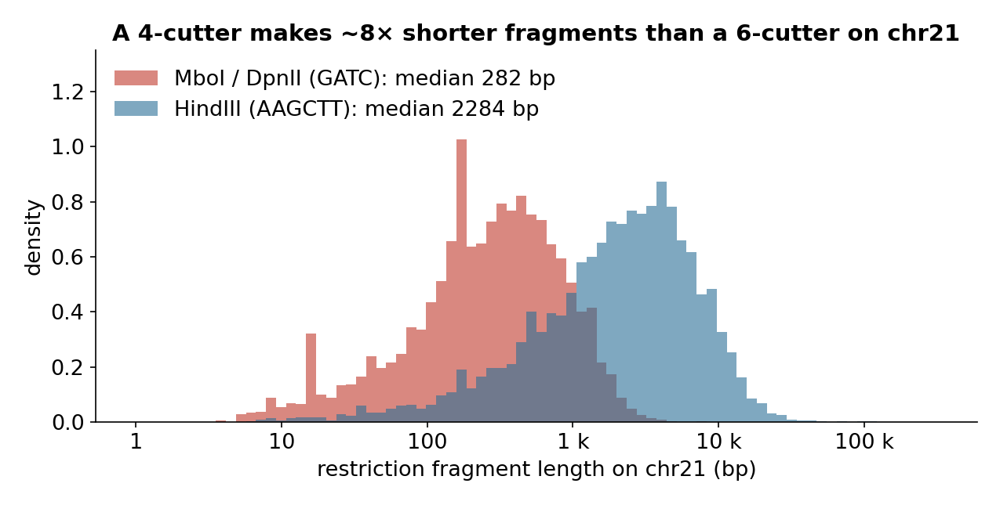
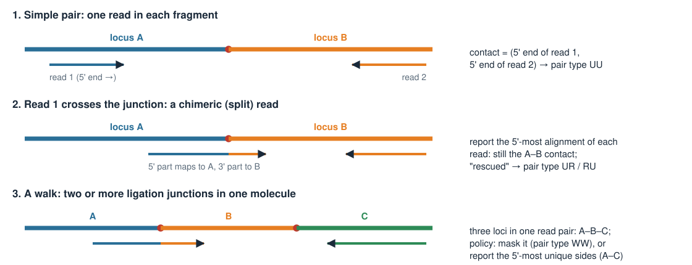
bwa mem -SP5M -t 8 chr21.fa R1.fastq.gz R2.fastq.gz \
| pairtools parse --min-mapq 30 --walks-policy 5unique --max-inter-align-gap 30 \
--drop-sam --drop-seq -c chr21.sizes -o chr21.pairs.gz-SP: do not pair the mates: no mate rescue (-S), no pairing (-P). The two ends are expected to come from anywhere in the genome.-5: for a split read, the 5′-most alignment is the primary one. -M: mark the other parts as secondary.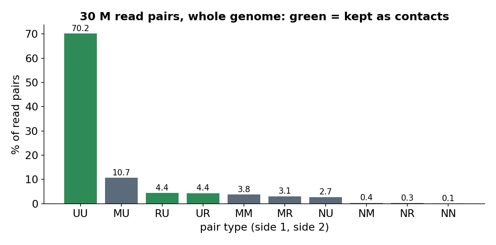
| letter | U | R | M | N | W |
|---|---|---|---|---|---|
| side is | unique (MAPQ ≥ 30) | rescued chimera | multi-mapped | unmapped | walk |
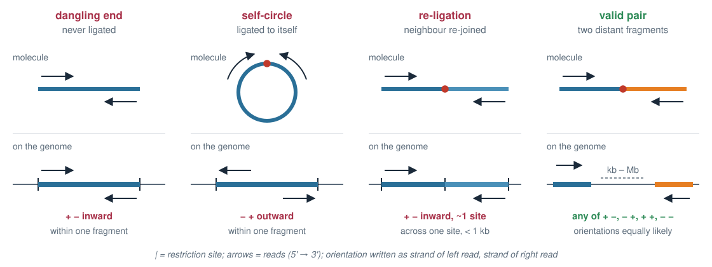
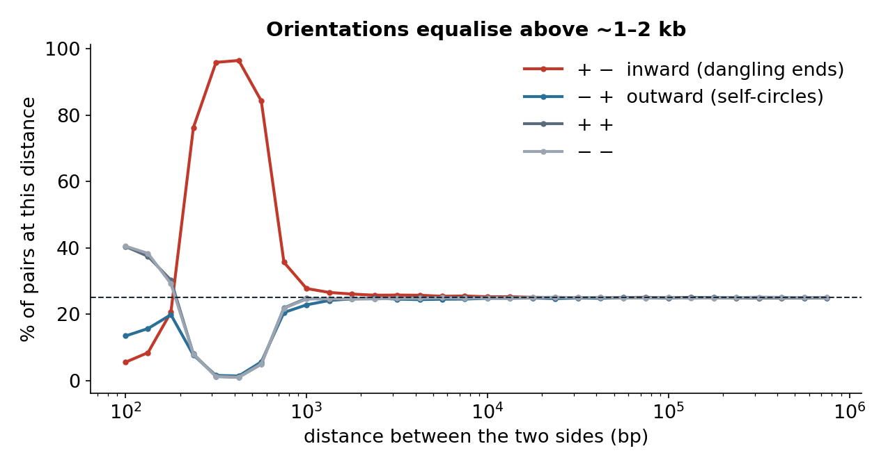
pairtools dedup removes pairs whose both sides match within 3 bp (--max-mismatch 3).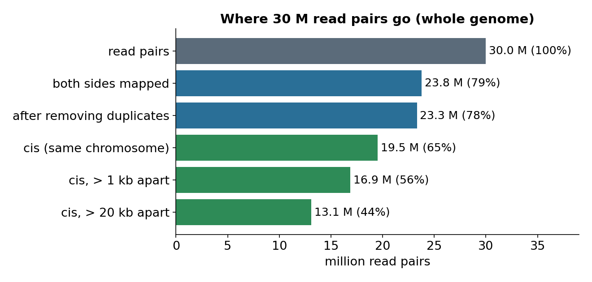
| metric | what it shows | good in situ Hi-C |
|---|---|---|
| uniquely mapped pairs (UU + UR + RU) | mappability, read quality | > 70% |
| duplicates | library complexity vs depth | low at the depth used |
| cis / (cis + trans) | random ligation is low | > 60–80% |
| cis > 20 kb / all | long-range information content | > 40% |
| orientation plot converges | artefacts confined to short range | by ~1–2 kb |
| fraction of reads with the junction | ligation happened | tens of % for 100-bp reads |
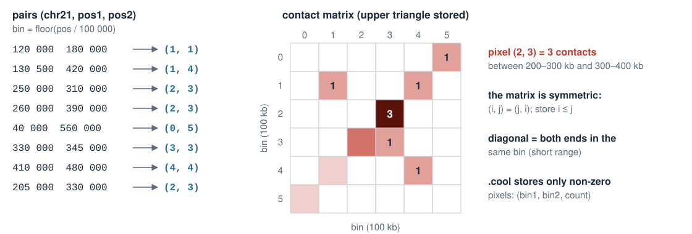
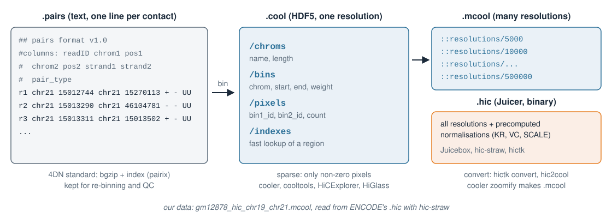
hictk or hic2cool; both are read by HiGlass, Juicebox (.hic) and the Python and R ecosystems.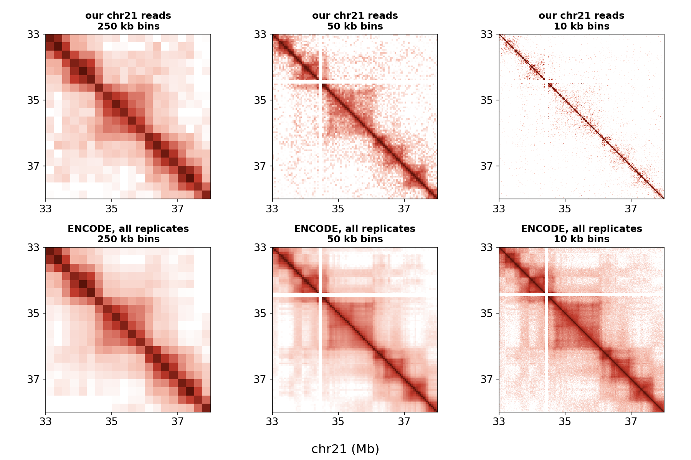
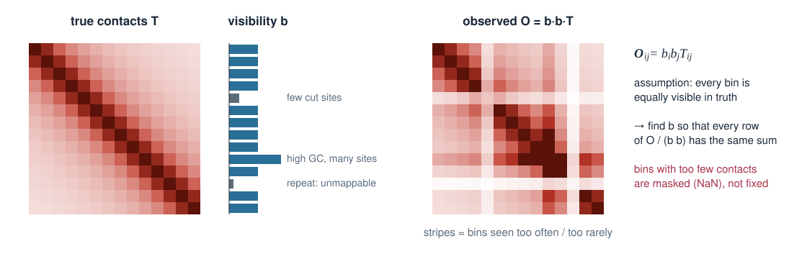
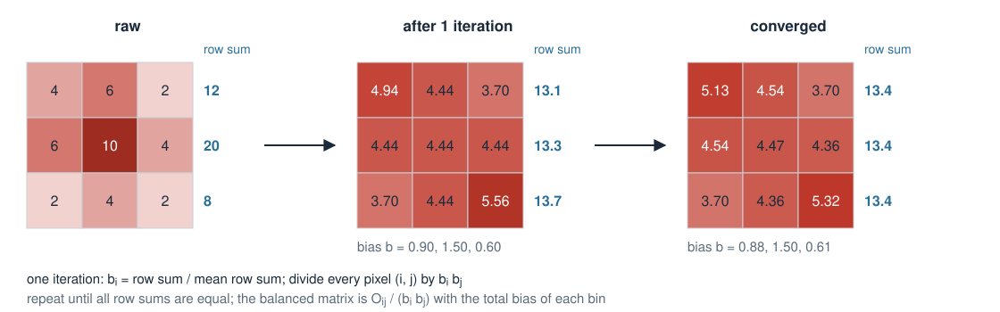
cooler balance stores 1/bias as the weight column.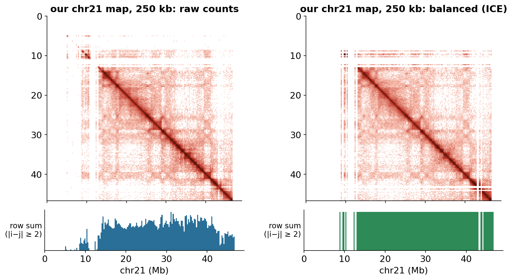
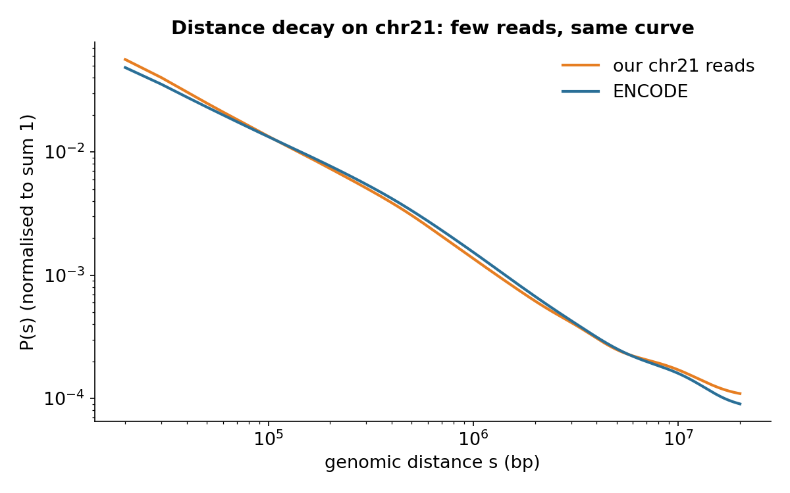
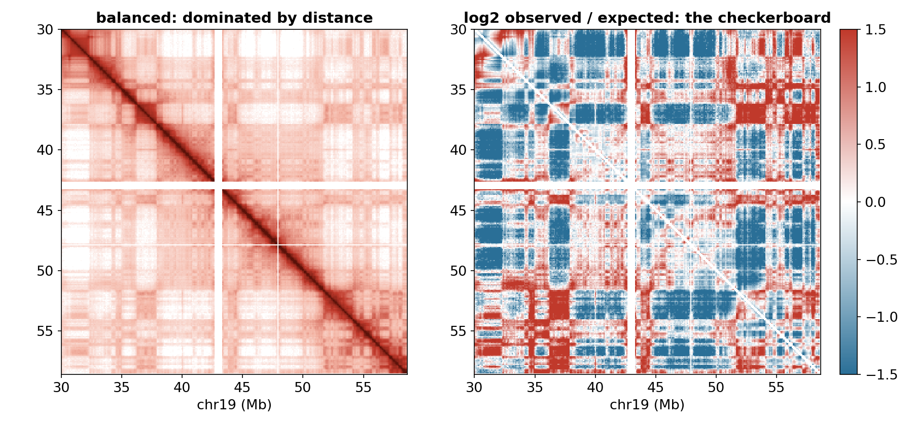
| step | key idea |
|---|---|
| chemistry | crosslink, digest (^GATC), biotin fill-in, ligate in situ; junction GATCGATC |
| mapping | each end alone (bwa mem -SP5M); split reads; 5′-most alignment represents a side |
| pairs | types UU/UR/RU kept; NU/MU/MM dropped; walks masked or reduced |
| artefacts | dangling ends (+ −) and self-circles (− +) below ~1–2 kb; PCR duplicates by both ends |
| QC | cis fraction, cis > 20 kb, duplicates, orientation convergence |
| matrix | fixed bins; symmetric, sparse; resolution limited by depth and enzyme |
| balancing | ICE: equal visibility; weight per bin; mask poor bins |
| expected | P(s) per diagonal; O/E removes distance decay |
Not required reading and not examined. For those who want the primary literature.